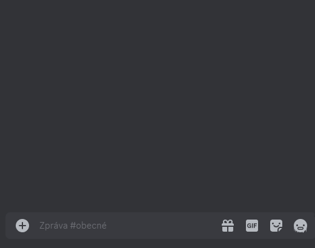

Vykreslování matematických výrazů
Princip příkazu /render <text>
Příkaz /render odešle do textového kanálu obrázek s vykresleným matematickým výrazem. Matematický výraz je vykreslen podle parametru <text>, který je zadán ve speciálním formátu.
Rozhraní příkazu /render <text>
Vykreslení výrazu a jeho následná úprava:

| Tlačítko | Funkce |
|---|---|
| ✔️ Potvrdit | Ukončí rozhraní – tlačítka zmizí. |
| 📝 Upravit | Vyvolá vyskakovací okno pro úpravu výrazu. |
| 🗑️ Smazat | Smaže příslušnou zprávu. |
Tlačítka ze zprávy zmizí automaticky po 30 sekundách, aby zbytečně neznepřehledňovala konverzaci.
Pravidla pro zápis matematických výrazů
Pro zápis matematických výrazů se používá Matplotlib Mathtext. Jedná se o podmnožinu jazyka TeX. Seznam všech podporovaných symbolů se nachází v dokumentaci balíku Matplotlib. Matplotlib Mathtext nepodporuje TeX prostředí typu \begin{}\end{}, do LingeBota byla ale přidána možnost vykreslovat matice a víceřádkové rovnice.
Zápis matic
Zápis matic je inspirovaný jazykem MATLAB. Do hranatých závorek se postupně vepisují jednotlivé prvky matice po řádcích. Pro oddělení jednotlivých řádků se píše středník a pro oddelění jednotlivých prvků v řádku se píše čárka. Mezery nemají význam na vykreslení, ale mohou zpřehlednit zápis uživatelem. Pro vykreslení hranatých závorek, které se nepromění na matici, lze použít symbolů \lbrack a \rbrack.
| Vstup | Výstup |
|---|---|
/render [1, 2; 3, 4] |
 |
| Uvnitř matic lze používat TeX příkazy: | |
/render [\cos{\alpha}, -\sin{\alpha}; \sin{\alpha}, \cos{\alpha}] |
|
| Matice mohou být součástí výrazů: | |
/render A = [1, 2; 3, 4] \cdot [5, 6; 7, 8] |
|
| Matice nemohou být argumentem TeX příkazu: | |
/render B = \sqrt{[1, 2; 3, 4]} |
Nelze vykreslit |
Zápis víceřádkových rovnic
Zapsaní dvou zpětných lomítek \\ značí nový řádek. Řádky lze zarovnat pomocí amersandu &.
Zapsání ampersandu & znamená, že znak, který se nachází bezprostředně za ním, bude ten zarovnávací. Obvykle se zarovnává podle rovnítka, zápis je pak tedy &=. Pokud se kdekoliv v zápisu objeví dvě zpětná lomítka \\, je zápis vždy brán jako víceřádkový. Ve víceřádkovém zápisu je v každém řádku první výskyt ampersandu & brán jako zarovnání a samotný ampersand tedy není vykreslen.
| Vstup | Výstup |
|---|---|
/render x&=5\\x+y&=6\\C&=[y,2;3,4] |